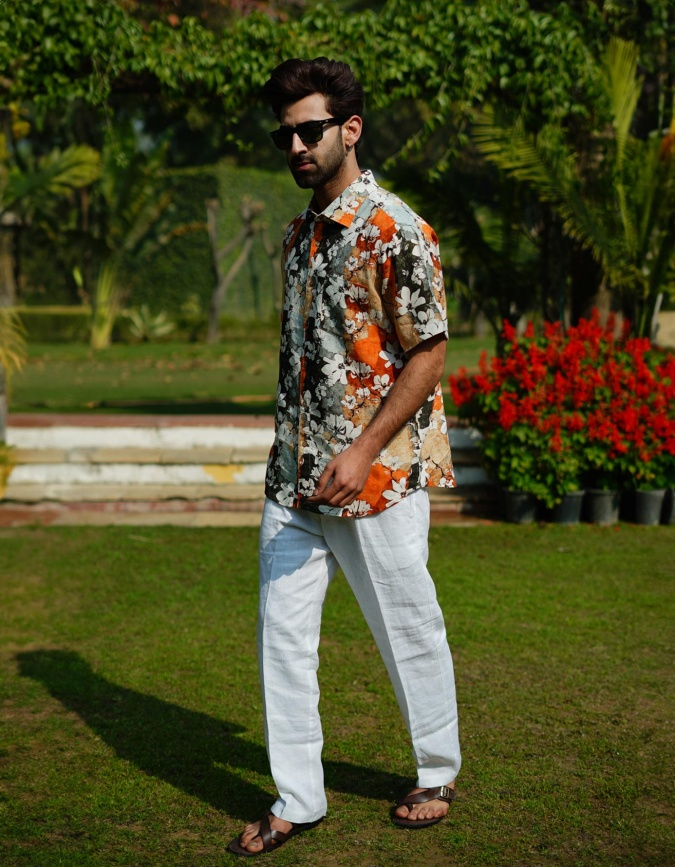

Handloom clothes:
There is renewed interest in the promotion of traditional handloom techniques in Goa, and this has led to the revival of indigenous weaving techniques. Organizations and state-level initiatives have been instrumental in helping local artisans and keeping age-old weaving traditions alive. This revival did not only serve the purpose of preserving cultural heritage but also providing livelihood opportunities to rural communities.